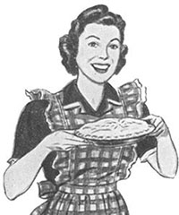

We are blinded by a deep-rooted mindset,
and it tells that developing is all about staying inside the OS walls. This is not necessarily to be the truth. In fact, it appears to exist a whole universe of brand new applications to be explored, applications that put people above the devices being holded in their hands.
I propose OpenPie. It can transmit data between devices, regardless the OS they are running or manufacturer constraints, by adopting a new mindset and simple existing technologies.
OpenPie is open at openpie.org
 “Pies are made to be shared”Another contributions
In company of talented people, I'm currently running another contributions. Among them, I'm the co-creator and co-organizer of Sanca Hub, a meeting of startups from São Carlos (SP, Brazil).
Previous contributions
In the early years I was focused to contribute to Astronomy web community. Two big highlights were Projeto Urânia and Urania View.